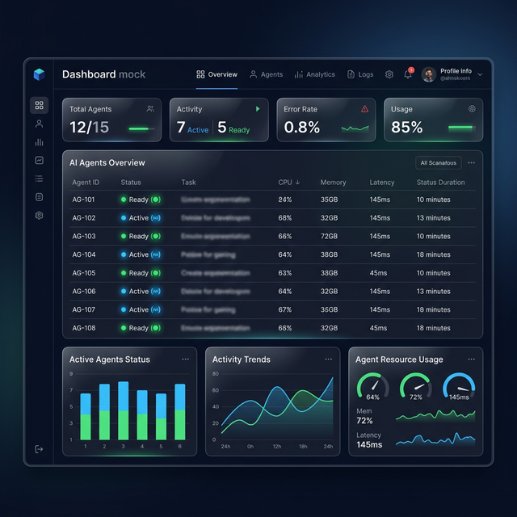

A single wizard to bootstrap a fully-wired, production-ready AI team. Equipped with a live HTTP dashboard, crons, auto-dispatchers, and HITL built-in.
No more tying disparate generic scripts together. AGI Farm brings enterprise-grade AI operations directly to your OpenClaw workspace.
Observe your AI team in real-time. A beautifully built React 18 dashboard served locally, powered by Server-Sent Events for zero-latency metrics.
Go from an empty directory to an 11-agent team in two minutes. Hand-tuned prompts and connections.
Intelligent task delegation that natively handles human-in-the-loop approvals, exponential API backoffs, and complex dependency DAGs.
Achieved a great team state? Run one command to export your exact team setup to a GitHub repo.
Start small with a triage team or deploy a massive 11-agent software pipeline immediately. Powered by OpenClaw.
Perfect for simple triage and research.
Complete enterprise-grade team mapped to real corporate roles.
Well-balanced executing production workloads.
Stop guessing what your scripts are doing. AGI Farm provides an instant window into every agent's thought process and task status.

One command away from production-grade AI infrastructure.